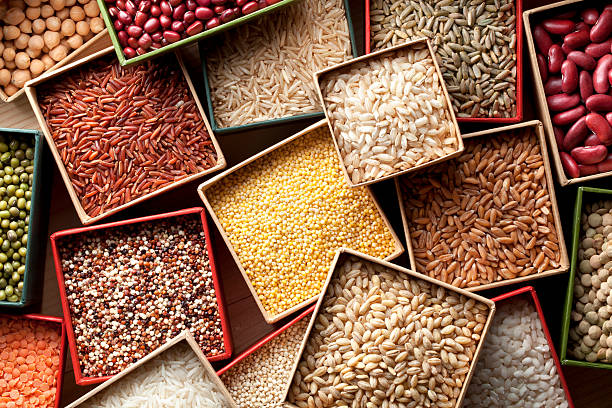
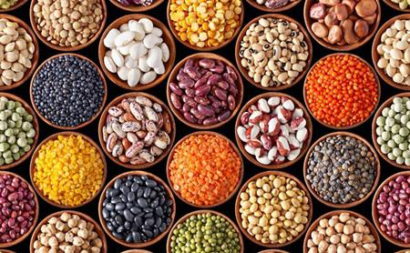
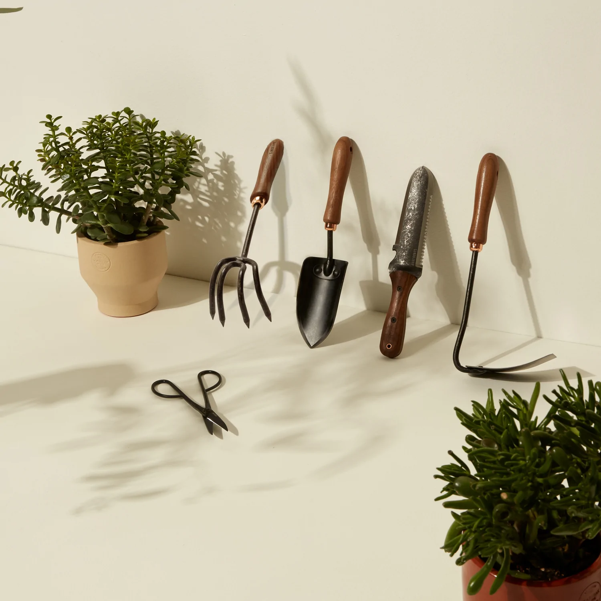

Set in Oregon's Willamette Valley, our fields are bursting with flowers that reflect the season, from fragrant sweet peas in the spring to magnificent dinnerplate dahlias in the fall and countless varieties in between. Research is at the heart of our operation, and we conduct extensive trials to find the very best cut flower varieties, coveted for their scent, stem length, and ethereal qualities. We source seeds from a small network of specialty seed farmers and grow many of the varieties we offer right here on the farm. Our shop features our very favorite cut flower seeds, as well as tools, supplies, and gifts.
A few years into our farming, we began cultivating a farm shop. We began selling speciality flower and vegetable seeds. Now we have a variety of products, from gardening books to tools such as snips.
  